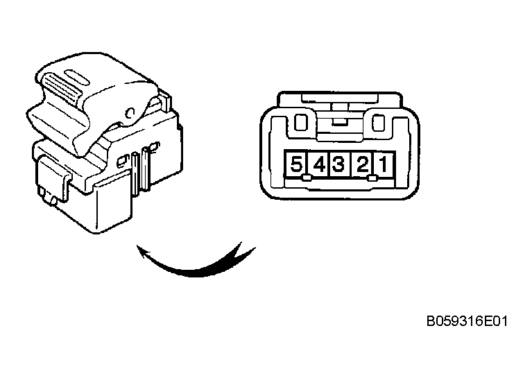

Rear Power Window Switch: Inspection
- INSPECT POWER WINDOW REGULATOR SWITCH ASSEMBLY (REAR LH AND REAR RH)
- Measure the resistance between each terminal of the connector when the switch is operated.
Standard resistance
TESTER CONNECTION SPECIFIED CONDITIONTester Connection Switch Condition Specified Condition 1 (D) - 2 (SD)
3 (U) - 4 (B)UP Below 1 Ω 1 (D) - 2 (SD)
3 (U) - 5 (SU)OFF Below 1 Ω 1 (D) - 4 (B)
3 (U) - 5 (SU)DOWN Below 1 Ω 
Courtesy of © TOYOTA, LICENSE AGREEMENT TMS1002If the result is not as specified, replace the regulator switch assembly.
- Measure the resistance between each terminal of the connector when the switch is operated.